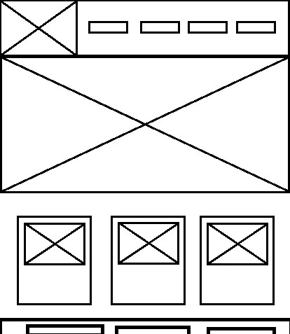
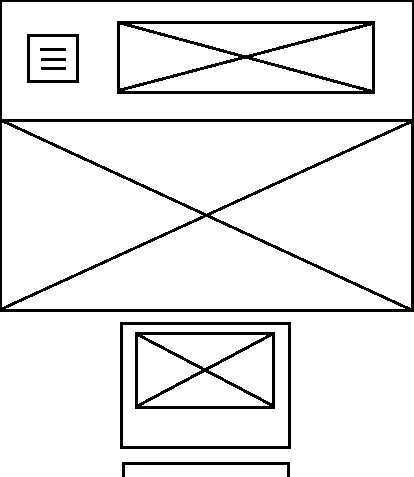

Site Name
The site will be named "Montevideo Chamber of Commerce". The word "Chamber" is included to represent the purpose of the site as a central hub for businesses, local government, and the community. The name was selected to reflect the chamber’s responsibility in promoting and supporting Montevideo’s business and tourism sectors, which are vital to the city’s economy.
Site Purpose
The primary purposes for creating this website include:
- Promoting Montevideo as a business-friendly city, showcasing opportunities for local entrepreneurs and international investors.
- Offering resources for businesses, residents, and tourists by providing information on local events, economic data, and community programs.
Scenarios
The following are sample questions that a visitor to the Montevideo Chamber’s website may ask:
- What networking events are available for local businesses this month?
- How can I get in contact with key business leaders or the chamber’s board of directors?
- What are Montevideo’s most recent economic trends and how do they affect businesses in the region?
Color Schema
The color scheme for this site will reflect Montevideo’s maritime identity, rich cultural heritage, and modern spirit:
- Blue (#5080e7) - Representing the proximity to the Atlantic Ocean and Río de la Plata, it will be used for headers and buttons to reflect Montevideo’s coastal culture.
- Dark Blue (#133279) - Providing accent to headers and buttons
- Yellow (#FFD700) - Symbolizing the Uruguayan flag and the city’s sunny, vibrant energy, it will be used for highlights and accent elements.
- White (#FFFFFF) - A neutral background color to ensure clean, readable pages.
Typography
The website will use the following fonts inspired by Montevideo's modern, professional, yet welcoming atmosphere:
- Poppins - Used for headings to give the site a clean and modern look.
- Open Sans - Used for body text, providing a simple and professional appearance for easy readability.
Wireframe
Below is a rough wireframe sketch of the home page layout:
For mobile view:
